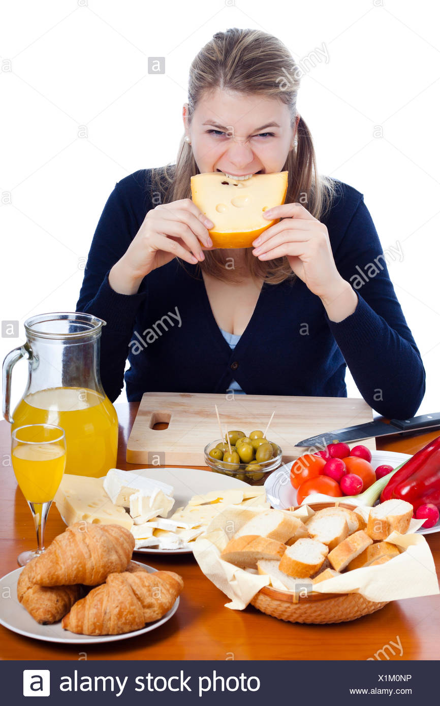
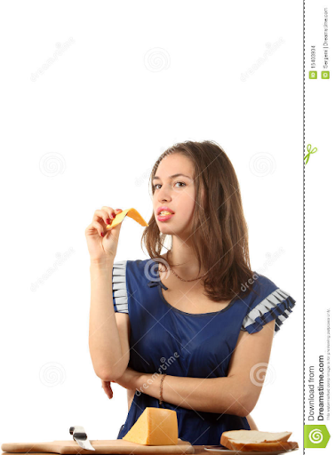

Hello Curd-Nerds
05/01/2019
By Meg Evansen
Hello Curd-nerds!
I’m so glad you found this cheese blog! Now, we all know that half the fun of cheese is taking pictures with it, and this got me thinking – how well does the internet represent our true cheese-loving selves?
Without further ado, please enjoy this list of my top 10 favorite stock photos of people eating cheese:
-
10. This woman, who clearly thinks her cheese is…suspicious, to say the least:
-
9. Yeah girl yeah! Just dive into it! I’m proud of you.
 -
8. This woman, who is judging us all, but with cheese:
 -
7. Have you ever been trapped at a table with a hipster who WON’T stop talking about how much they know about cheese, and how you can really just taste the fresh grass the cows ate, and that they wouldn’t be caught DEAD getting cheese from a non-specialty store, and that brie cheese is just the poor man’s camembert? This is that person:

Unrelated: Who just puts a full pepper as a centerpiece? Someone chop that pepper! And is it in a bowl of broccoli?? This party is MADNESS.
-
6. This baby knows what’s up. I trust this baby.
-
5. Lady, that’s not….that’s not how you do it.
-
4. You know the common adage, “Stop and smell the cheese?” Anyway, Karen’s about to get kicked out of this grocery store.
-
3. I mean, whatever.
-
2. THIS MAN IS AMAZING AND HE CLEARLY KNOWS SOMETHING WE DON’T. TAKE HIS CHEESE SAMPLE AND ACCEPT HIS KNOWLEDGE ON THE SECRETS OF LIFE.
-
1. It was a tough call on the last and best stock photo, but upon careful reflection, I landed on….CHEESE SCIENCE:
Dissect it. Carefully. On a scale (?). In a petri dish. For science.
This concludes my list of favorite cheese stock photos. Thank you for coming to my TED talk.